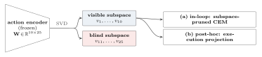

A frozen world model's action encoder states, in its weights, which action directions its cost can never see. A sampling planner over such a model executes noise it never chose. One SVD removes it, provably for free, and the cost's own spectrum says how few directions are worth searching.
A sustained perturbation along the model's blind action subspace. The camera difference grows to millimeters; the model's imagined difference stays at the float32 floor. (Imagination tiles: post-hoc visualization decoder, never used in planning.)
On a released Cube checkpoint, the action encoder maps 25 action dimensions to 10. The 15-dimensional null space is erased at every state: the cost is provably constant along it. Those directions still move the robot, and their effect compounds over the horizon. No check on the imagination side can report the error.
The planner is the main source of this motion. Elite selection scores candidates through the model, so it exerts no pressure on blind coordinates, and the executed mean performs an unbiased random walk.
In the environment, one sustained blind perturbation compounds over the horizon (the probe state of the clip at the top of the page). The model's imagined latent never moves off the float32 floor.
In the solver (instrumented CEM, Cube seed 0, medians over 50 episodes): the proposal contracts identically along visible and blind directions. The blind part of the executed mean is therefore an unselected walk. It ends at 2.89 per block, the paper's measured executed norm; the selection-free prediction is 2.95. The pruned solver never represents those coordinates.
Everything is read off the frozen checkpoint: one SVD of the action encoder splits each action block into the directions the cost can see and the 15 it cannot. Restricting the sampler to the visible half costs nothing, in loop (a) or post hoc (b). The cost gradient's spectrum then says how few of those visible directions the cost varies along; truncating at a deep spectral gap is the task tier of the same restriction.

Paper Figure 1: one SVD of the frozen action encoder, two uses. The cost is provably constant along the blind subspace, so restricting the sampler preserves both the optimum and the law of the visible search.
Six checkpoints, three arms. Cube: +10.7 points, 39 of 300 pairs improve, 7 degrade, every seed positive. Cube-double: +12.3, 49 improve, 12 degrade. Below the chart, one player and eight paired clips: same start state and seed in both columns, replayed through a bit-exact fidelity gate against the stored records.
Success rate at N=300, mean over seeds (hover a bar for the seed count). Pruning moves success by at most 6 points on any checkpoint, significant only on Cube (+6.0). The spectral-k arm pays where the spectrum collapses (Cube +10.7, Cube-double +12.3) and not elsewhere.
Each block: what the task is, what the restriction does there, and one outcome strip per arm, all 50 stored episodes in order. The raw clips stay behind a fold; open it only when you want to watch the episodes themselves. Everything is a bit-exact-gated replay of a stored evaluation episode.
Removal is lossless everywhere; where it pays is a property of the environment. The dose-response instrument sweeps executed blind noise around each planner's working point: where the curve is steep (Cube), removing the planner's own noise is the gain. The spectrum instrument counts the directions the cost varies along: where it collapses far inside the visible subspace (Cube-double), concentrating the samples is the gain. Scene's flat curve and gapless spectrum predict its null result, and TD-MPC2's gapless locomotion spectra rule the truncation out for that model family.
The executed-noise channel, one Cube episode, three arms. Removing the planner's own noise is the measured effect (+6.7, p=0.0002, every seed). The amp-4 dose shows the curve's far end; its drop is marginal at six seeds (−4.0, p=0.058, signs mixed).
Closed-loop dose response: paired Δ success against each planner's working point as the executed blind amplitude is removed (x=0) or raised. Steep on Cube, flat on Scene and Cube-double.
Spectra of the cost gradient's second moment, six checkpoints. A deep gap marks where the criterion reads k; Scene has none.
k-scan: sampling k directions against ambient, on shared seeds. Reading k at a deep gap pays; cutting through the gap is punished; on Cube-triple the criterion's own k pays nothing, the preregistered miss.
The restriction transfers across sampler families: spectral-k against the matched ambient sampler of the same family.
Every instrument ran with predictions and disposal rules committed to version control before its closed-loop data existed. Two preregistered predictions missed; both are in the paper, and both narrowed what it claims.
What survives retraining: the null space, the leading directions, and the top-4 payoff (nine of nine paired seeds). What does not: gap position and depth. On the shallow-gap retrain the criterion reads k=3 and loses 9.3 points.
@article{zhou2026subspace,
title = {Subspace-Pruned Planning for Action-Compressed World Models},
author = {Zhou, Rongxuan and Wang, Yuhai and Hu, Xiao and Cao, Senhao
and Ye, Gilbert},
journal = {arXiv preprint},
year = {2026}
}
Related: the anisotropy measurement study that found the post-hoc projection effect; PRISM, whose learned sampling prior composes with this restriction; the LeWM and DINO-WM model families this work analyzes. Per-episode records behind every number ship with the code release, which recomputes the paper's statistics from them in a CPU-only self-check.